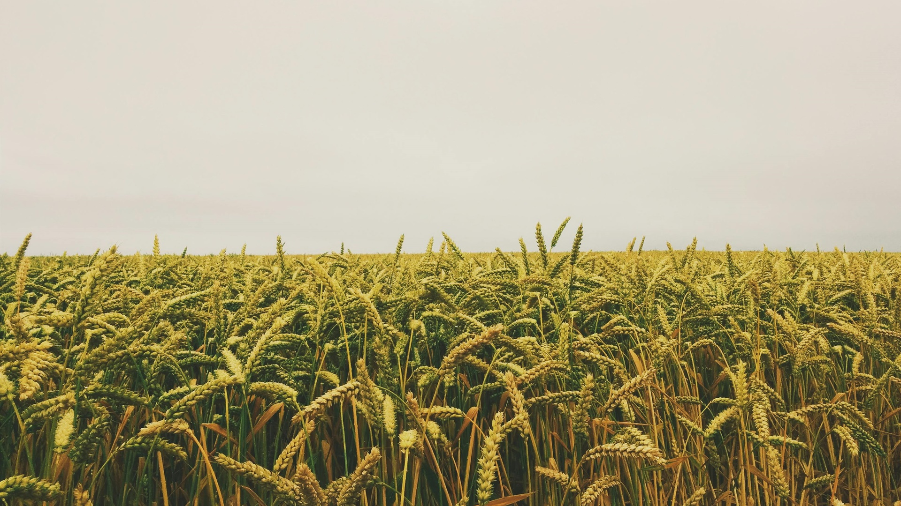

En 1983, con la visión de aprovechar la relación directa con los agricultores y un conocimiento profundo del sector, nació una empresa dedicada a la comercialización de granos. Desde una pequeña bodega y con el apoyo inicial de un par de camiones, se comenzó a forjar lo que hoy se conoce como una de las compañías líderes en el sector de granos, marcando un punto de partida con una operación modesta pero con grandes ambiciones.
Hacia 1989, lo que comenzó como un emprendimiento familiar, se transformó en un referente de calidad y confianza en el mercado de granos, expandiendo su operación con la inauguración de su primer centro de acopio en la localidad de Oso Viejo. Este hito fue solo el inicio de una serie de expansiones que llevaron a la empresa a aumentar su capacidad significativamente, permitiendo no solo la comercialización y almacenamiento de granos sino que también inició una diversificación hacia otras áreas relacionadas con la agricultura. Este grupo no solo refleja la evolución de una empresa familiar en un conglomerado de negocios sino también su adaptabilidad y visión a largo plazo en el sector agrícola y más allá.
En sus más de 30 años de trayectoria se ha hecho presente en la industria agrícola en el estado de Sinaloa desde el municipio de Guasave hasta El Rosario. Granos Patrón tiene una capacidad de almacenaje instalada de más de 20 mil toneladas en bodegas refrigeradas para la conservación del frijol y arriba de 780 mil toneladas a granel para otros cultivos como maíz, arroz, sorgo, entre otros. Su proyección a nivel nacional es amplia, lo que convierte a Granos Patrón no solo en el acopiador más grande de Sinaloa, sino a uno de los más grandes de todo México.
Somos una empresa líder del sector agroindustrial, comprometida a dinamizar y robustecer la agricultura a través de la provisión de productos de calidad, servicios integrales, créditos oportunos y asesoría técnica especializada. Actuamos como un puente firme entre los productores y el mercado, asegurando una conexión fluida y beneficiosa para ambas partes.
Convertirnos en la primer y mejor opción para el productor agrícola, clientes y proveedores. Aspirando a impulsar y fortalecer el sector agrícola, mediante la provisión integral de servicios financieros y técnicos que permitan a los productores agrícolas alcanzar su máximo potencial.
Unidad
Integridad
Liderazgo
Enfoque en el cliente
Compromiso
Confianza